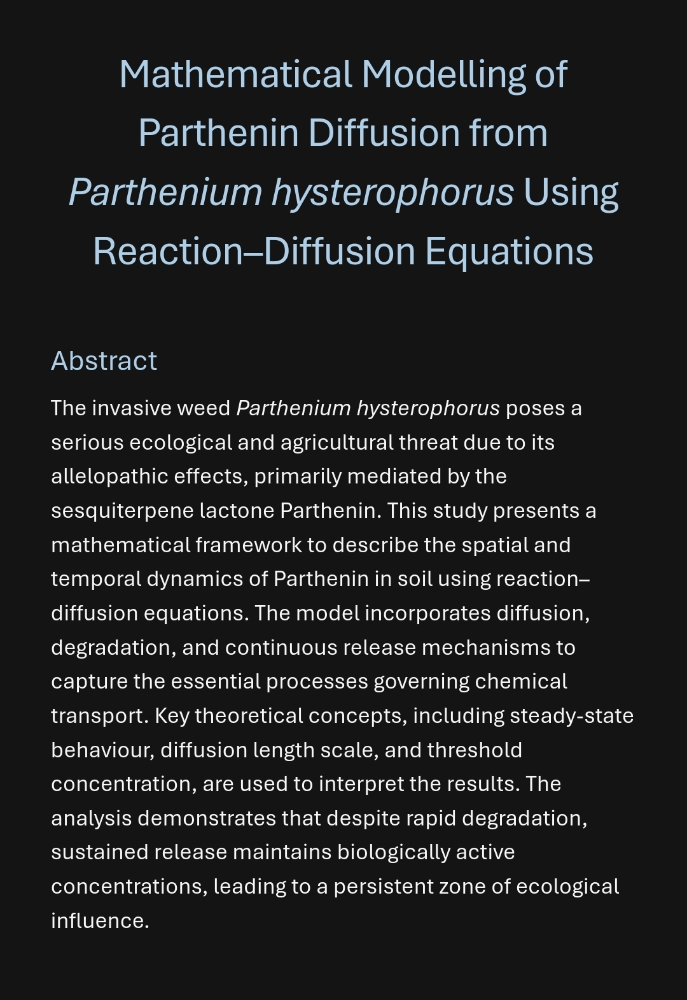
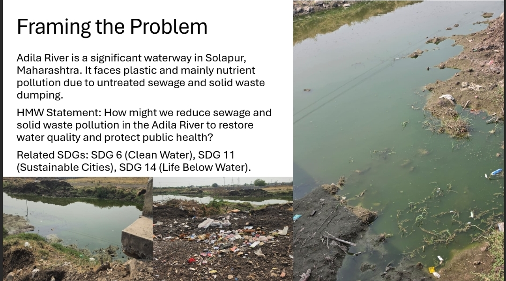
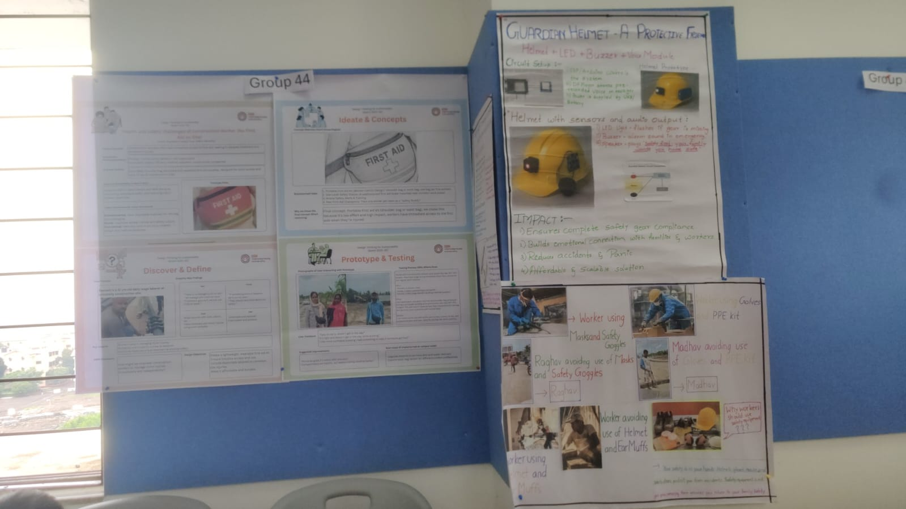

Engineering Projects

Parthenium Diffusion Modeling
Researching the mathematical diffusion patterns of *Parthenium hysterophorus*. This project utilizes reaction-diffusion equations to predict environmental impact and potential containment strategies through computational thinking.
MATLAB Mathematics
ACE: Adila River Pollution Study
A comprehensive environmental engineering project focused on the Adila River. Conducted research on nutrient recovery and sustainable wastewater management, developing visual dashboards for green chemistry principles.
Sustainability Research
AI4A: Object Hunt Alarm
An innovative alarm system that forces user engagement. The alarm only deactivates once the AI recognizes a specific "target object" through the camera, effectively eliminating the 'snooze' habit through computer vision.
AI Python
Construction Safety Gear Design
Applying Design Thinking frameworks to develop ergonomic and high-tech safety gear for construction workers. Focused on impact resistance and real-time vital monitoring concepts.
Design Thinking UX